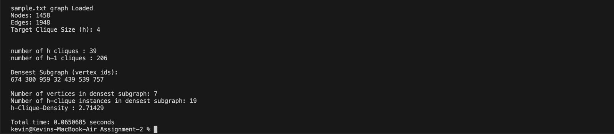

Exact Algorithm
Algorithm-1 (referred to as the EXACT method) computes the densest subgraph of an undirected graph by leveraging maximum flow techniques. The algorithm models the densest subgraph problem as a series of flow network problems and uses a binary search over density thresholds to find the maximum possible average degree among all subgraphs. Key features are:
- Binary Search Framework: The algorithm performs a binary search over possible density values (average degree thresholds), solving a maximum flow problem at each step to check if a subgraph exists above the threshold.
- Flow Network Construction: For each candidate density, a flow network is constructed where nodes are connected to a source and sink with capacities based on degree constraints.
- Subgraph Extraction: If a feasible subgraph exists at the current threshold (identified by analyzing the residual graph after flow computation), the threshold is increased; otherwise, it is decreased.
- Precision Control: The binary search terminates when the gap between the upper and lower density bounds falls below a small ε (precision parameter).
Performance Results
Netscience
As-733

Yeast
